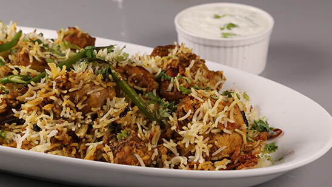

Biryani

Description
Biryani is one of the most eaten dish in Pakistan. It is made from
rice, chicken and spices of several types. The end product is scrumptious
and delighting fusion of rice and chicken that will leave your tastebuds
to ask for more everytime you eat.
There are several types of birayni found not only in Pakistan but also in
India. Biryani can contain differenct types of meat as well from chicken
to camel meat and even prawns as well. But chicken biryani will always have a
special place in my heart and that's what this recipe is all about.
Ingredients
- Chicken 1 kg
- Salt to taste
- Red chili powder 1 tsp
- Turmeric powder 1/4 tsp
- Ginger garlic paste 1 tsp
- All spice powder 1/2 tsp
- Black pepper powder 1/2 tsp
- Coriander leaves 1/2 bunch
- Mint leaves 10-12
- Chilies slit 6
- Fried onions 1 cup
- Yogurt 1 cup
- Green cardamom powder1/2 tsp
- Lemon juice 1 tbsp
- Oil 1 tbsp
- Basmati rice 600 gm
- Cinnamon sticks 2
- Cloves 4
- Cardamoms 3
- Black peppercorns 6-7
- Caraway seeds 1 tsp
- Oil 1 tsp
Steps
- Marinate the chicken pieces with salt, red chilli powder, turmeric powder,
ginger garlic paste, all spice powder,
black pepper powder, coriander leaves, mint leaves, slit green chillies,
fried onions, yogurt, green cardamom powder, lemon juice and oil,
set aside for an hour or preferably overnight.
- Cook presoaked rice in water, salt, cinnamon sticks, cloves, cardamoms,
black peppercorns, caraway seeds cook until it is 70% done, strain
the rice.
- Heat oil. Add the marinated chicken and let it cook.
- Once done to assemble the biryani grease with oi or ghee a deep pan and
put half the rice and then the chicken, remaining rice and then green
cardamom powder, some fried onions, coriander leaves,
mint leaves, lemon juice, some oil, ghee, saffron flavored milk.
- Cover with a tight lid. Let it cook till rice is completely done. Put
a tawa under the pan and simmer on low for few minutes. Serve with raita.
- Garnish with mint leaves, green coriander and onion flavored oil.
Return to Homepage